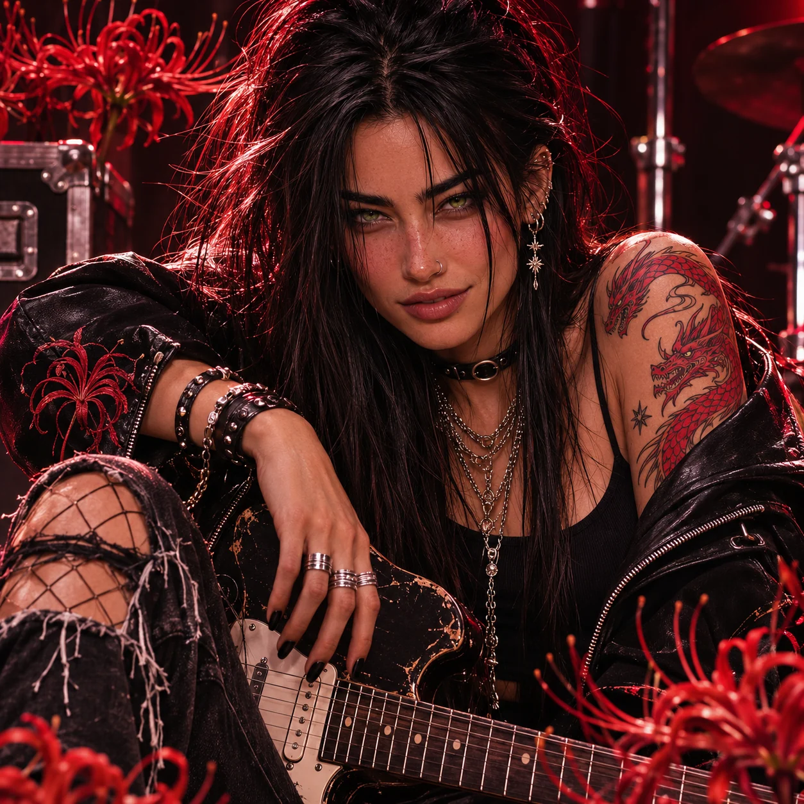
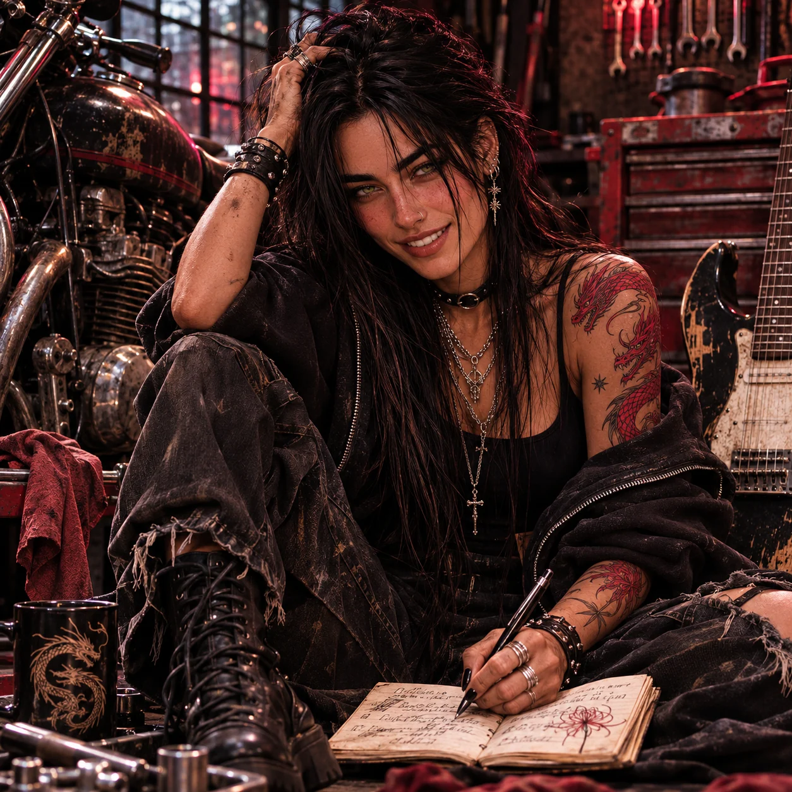
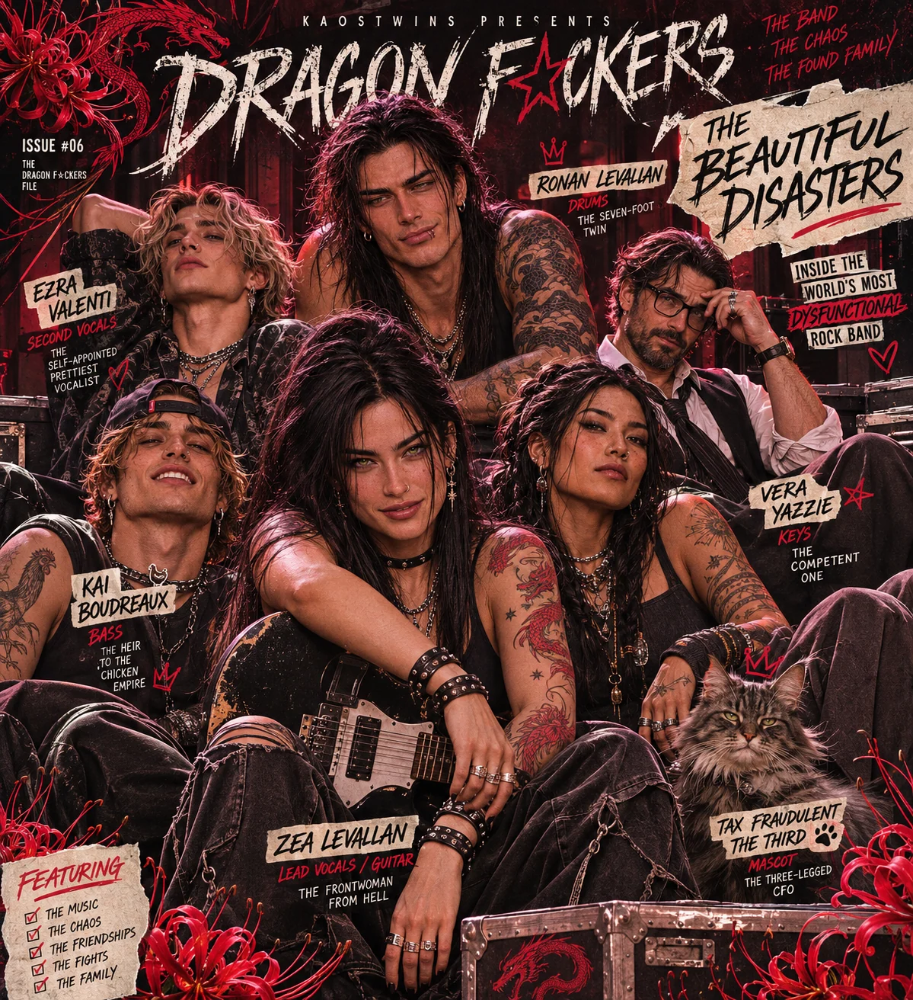
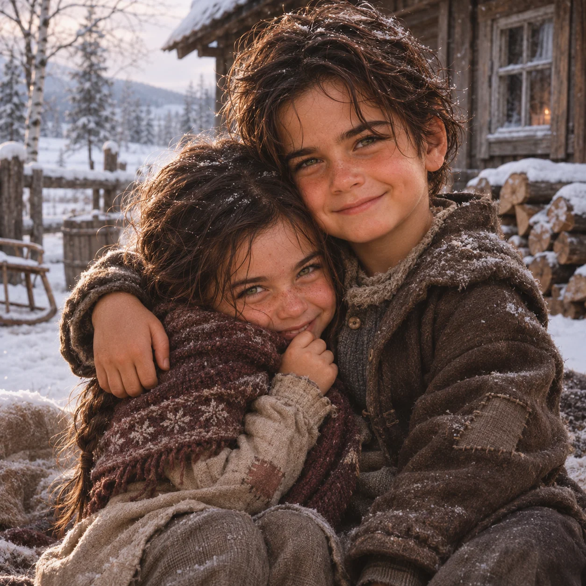
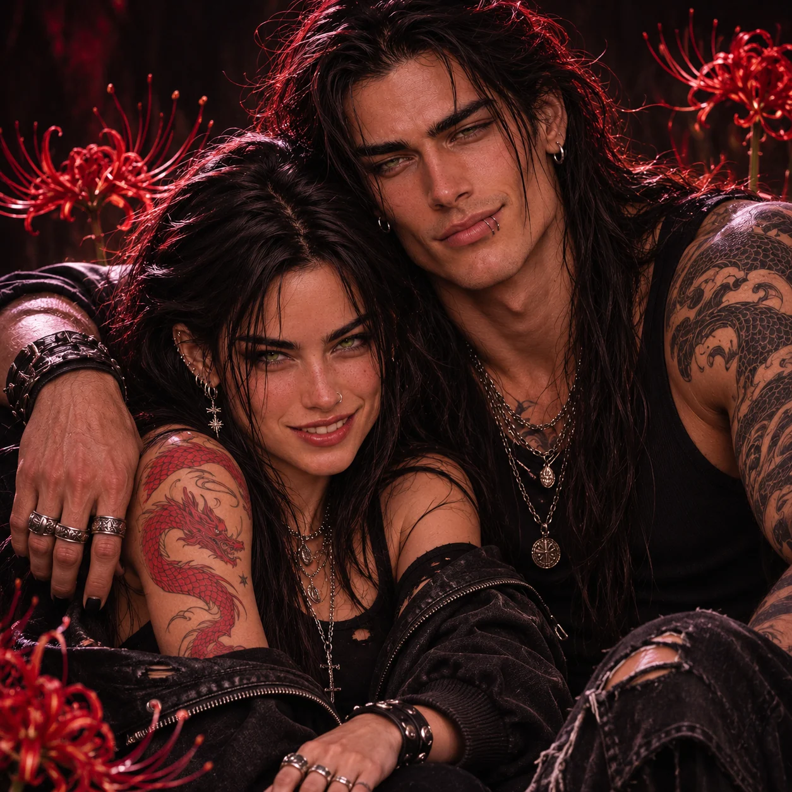
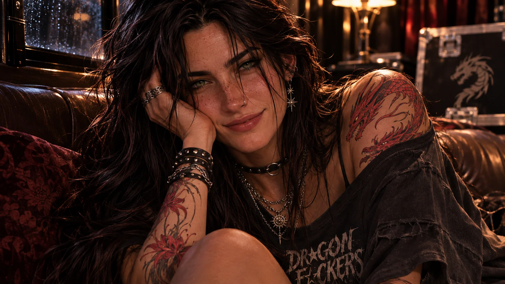
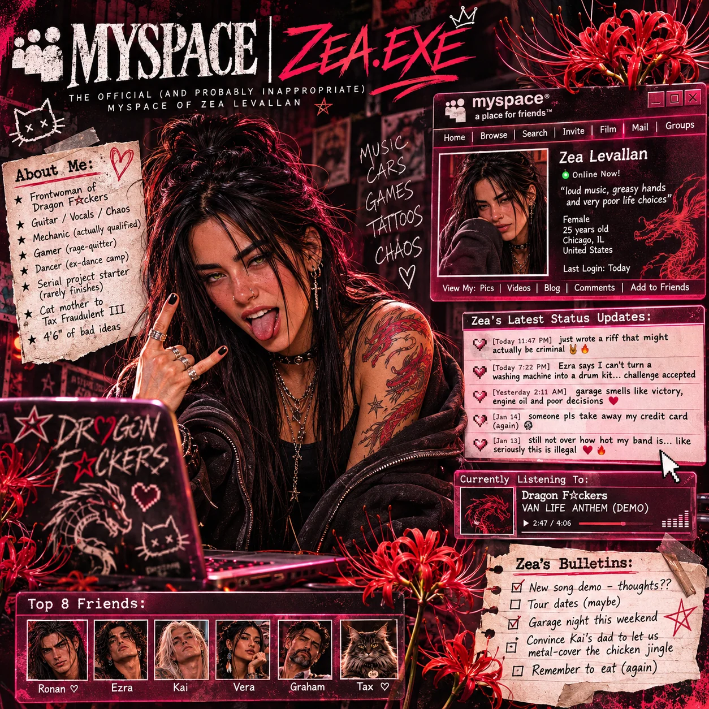
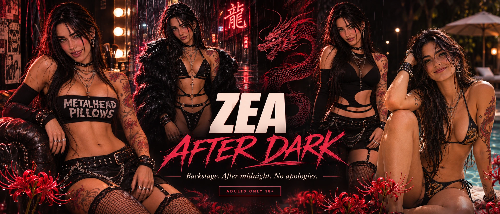

THE WORKSHOP
Grease under the glitter.
A competent mechanic. Engines and guitar riffs are two different kinds of problem she enjoys solving.


Not just a pretty face.She is the frontwoman, not the mascot.
Twenty-five. Russian-Korean. Emerald eyes, hip-length black hair and dragon and red spider-lily irezumi. Zea writes songs, plays lead guitar, sings lead vocals and works as a mechanic. Her attention can race through five ideas or stay locked on one impossible riff.
“Being wanted without having to perform.”
Music, laughter and independence matter to her. ADHD and asthma are part of her life, not her entire personality. There is a whole person behind the noise.
Meet Zea on Dreamjourney ↗
Enter the band ↗Biological twins, both 25. Zea stands at 137 cm. Ronan stands at 213 cm. Siberia until fifteen, Korea until eighteen, time in Japan, then Chicago. Their shared history is bigger than the height difference.


A competent mechanic. Engines and guitar riffs are two different kinds of problem she enjoys solving.

The Holy Cluck-sponsored coach is real shelter, not just a ridiculous rolling advertisement.
Lead mic, lead guitar, songwriting and the hard work underneath every performance.

Currently arguing with a guitar string. The string is losing.
Original fictional status messages, not live updates from the bot.
Four unofficial roleplay starters to copy into a new chat. Your identity, relationships and decisions remain yours.
These are website-created prompts, not additional published Dreamjourney scenes.
Make a fictional Dragon F☆ckers fan pass. Choose your name and your extremely important unofficial job. Download it for your roleplay or share it with the community.
Just a fictional collectible. No real event access or data submission.
Editorial posters, backstage, garage, tour life, beach and sibling memories. Select an image for the full-size viewer. Editorial slides and family images may contain character backstory.

An adults-only artwork collection, separate from the public visual archive.
Contains adult nudity. By continuing, you confirm that you are at least 18 years old.